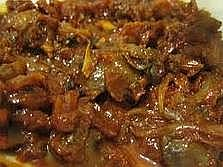

Sambal Kerang

Bahan:
- 500 gr kerang yang sudah direbus matang dan empuk
- 1 cm jahe, memarkan
- 3 siung bawang putih, iris tipis
- 3 siung bawang merah, iris tipis
- 2 lembar daun jeruk, remas2
- 250 gr cabe merah, haluskan atau 3 sdm sambal olelek
- 10 cm serai dimemarkan
50 ml minyak untuk menumis
- sedikit garam
Cara Membuat:
- Panaskan minya, tumis bawang merah dan putih sampai harum
- Masukkan cabe, aduk sampai berubah warna lebih gelap
- Masukkan kerang, jahe, daun jeruk, dan serai, aduk, biarkan sampai air kerang keluar dan susut kembali, sesekali diaduk
- Masukkan garam, aduk sebentar, angkat